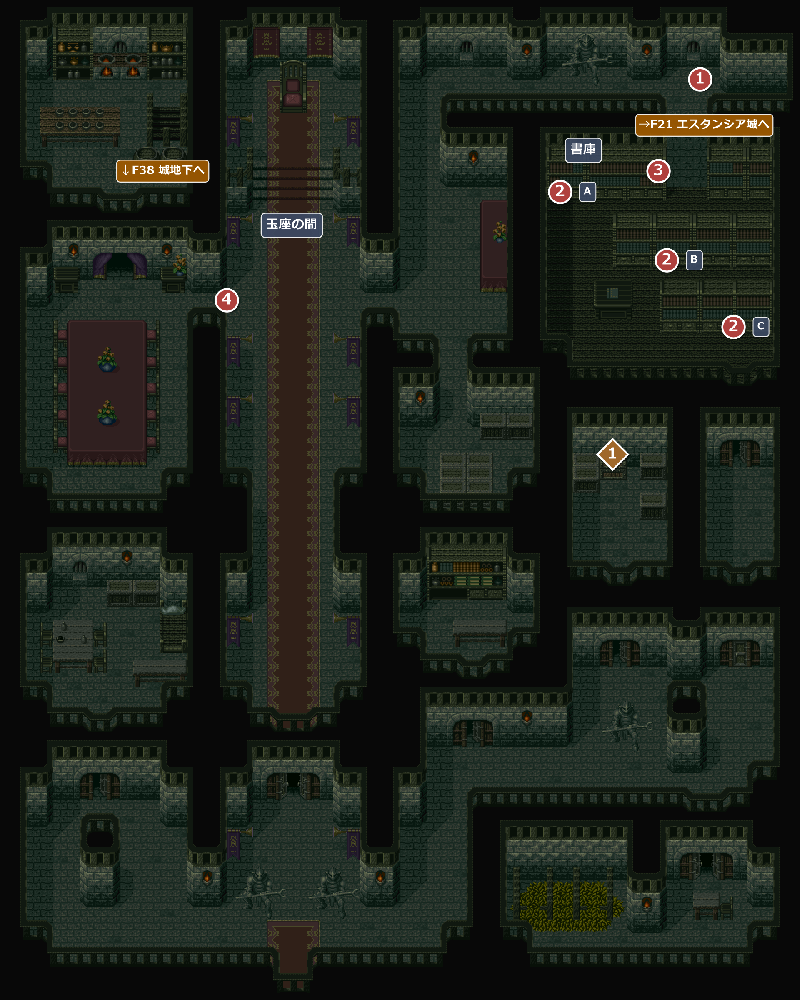

FIELD33
エスタンシア城室内
エンカウント率0%ランパル王の王宮の中。ショウコの案内で秘密の扉から忍び込み、古い楽譜が収められた文書保管所を目指す。
名前 建物・場所→ ほかの FIELD へ1メインイベント1宝箱・落ちている物

イベント
1
文書保管所へ
場所: 秘密の扉から入ってすぐの通路(X104 Y11-17)
ショウコに行き先を聞かれ、アイリスが古文書などがしまってある場所を探していると答えると、ショウコが奥の文書保管所へ案内してくれる。
！ここで目的を果たすまでは、秘密の扉から出ようとしても、ショウコ「まだ目的を果たしておりません。私を残して、戻らないで下さい…」と止められる。
次へ書庫へ(②)。
2
書庫の本棚
場所: 書庫の本棚3つ(A = X84 Y31・B = X100 Y41・C = X112 Y51)
書庫には本棚が3つ(A・B・C)ある。3つのうち最後に調べた本棚から、本筋の楽譜が見つかる(どの本棚が最後でもよい)。それより前に調べた本棚では、本棚ごとの会話が出る。
最後に調べた本棚は本筋の会話に置き換わるので、A・B・C の会話のうち1つは必ず見られない。
まだ調べていない本棚があるうちに書庫を出ようとすると、アイリスに止められる。
最後に調べた本棚は本筋の会話に置き換わるので、A・B・C の会話のうち1つは必ず見られない。
| 本棚 | 会話(最後に調べたときは出ない) |
|---|---|
| A | 「なんだ、これは何も書いていないただの古い五線譜のようだ。」 |
| B | 「なんだ、これなら良く知ってる歌だ。オルカの舟歌だな。よーほーいよーほーいよっよっよっ！」 アイリス「へんな鼻歌うたってる！」 「…ふん。もともとヘンな歌なのさ！ 歌がヘタなわけでは決してないぞ。」 |
| C | 「なんだ、楽譜と思ったら、ただの落書きだな。なになに？ 『らんぱるおう １０さい』だって？ 王様の子供時代のものかぁ。」 |
| 最後の本棚 | 「おや、この楽譜は…？ 力が感じられる、偉大な力が。この楽譜がオードなのだろうか？」 アイリス「なに…みつけたの…？」 「楽譜は全体に汚れていて、よく判別できない。題の所には、“カリヨン”とあるようだが？ これがオードなのだろうか？」 「いずれにせよ、持ち帰って調べる必要がある！」 |
入手 薄汚れた楽譜
薄汚れた楽譜
次へ書庫の出口へ(③)。
3
連行
場所: 書庫の出口(X100-104 Y27)
書庫を出ようとすると衛兵に取り囲まれ、王の命令で玉座の間へ連行される。ランパル王は一行の行動を見張らせていた。
ショウコは、自分が王の幼なじみでいいなずけだと訴えるが、王は彼女のことを思い出さない。ショウコに想いを寄せていたライオネルは、思わぬ事実に打ちのめされる。
王は楽譜に力を感じて「ガリハアク殿の探しているオードか？」と確かめるが、オードではないと分かると、薄汚れた楽譜を破り捨て、全員を牢へ入れる。
ショウコは、自分が王の幼なじみでいいなずけだと訴えるが、王は彼女のことを思い出さない。ショウコに想いを寄せていたライオネルは、思わぬ事実に打ちのめされる。
王は楽譜に力を感じて「ガリハアク殿の探しているオードか？」と確かめるが、オードではないと分かると、薄汚れた楽譜を破り捨て、全員を牢へ入れる。
！書庫から玉座の間へ連行されるとき、玉座の間を歩く位置は並び順で決まり、並びの2番目のキャラがショウコのすぐ横にぴったり寄り添って歩く。ライオネルを2番目に入れておくと、ライオネルとショウコが「いい感じ」っぽく見える。ショウコ自身を2番目にすると、横には誰も来ず一人で歩く。
次へF38 エスタンシア城地下へ(自動)。
F38 エスタンシア城地下から戻ってきたとき
4
破られた楽譜
場所: 玉座の間の西側(X34 Y43-49)
注意秘密の扉から外へ出ると、二度と城の中には戻れない。宝箱(毒の雨の歌)などのやり残しが無いか確かめてから出ること。
アイリス「あれ？ これは…」「さっき破かれた楽譜だわ。ボロボロになってる…何かの役にたつかもしれない。持っていきましょう」——これで秘密の扉から外へ出られるようになる。
入手 破られた楽譜
破られた楽譜
！城の南の正面玄関(X42-44 Y147)から出ようとしても、「扉は固く閉っている。」ショウコ「…だめだと思います、ここから外には出られません…私たちが入ってきた場所から出ましょう」と出られない。
次へ秘密の扉から→F21 エスタンシア城へ(城の④)。
宝箱・落ちている物
1
宝箱
場所: 中央の東の小部屋(X90-92 Y73)
「箱を開けると、中には古い楽譜が入っていた。楽譜には『毒の雨の歌』と書かれてあった。」
入手 毒の雨の歌
毒の雨の歌